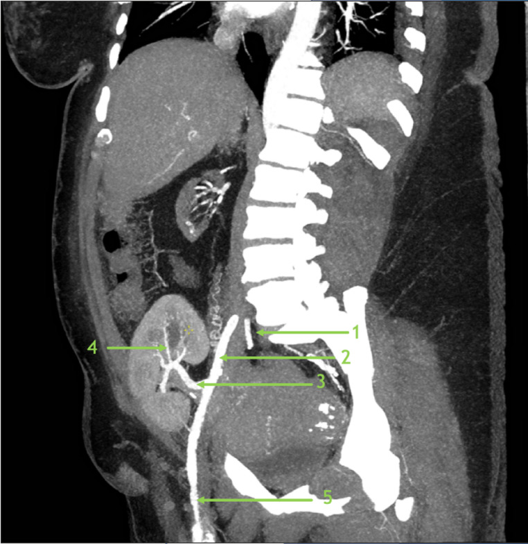
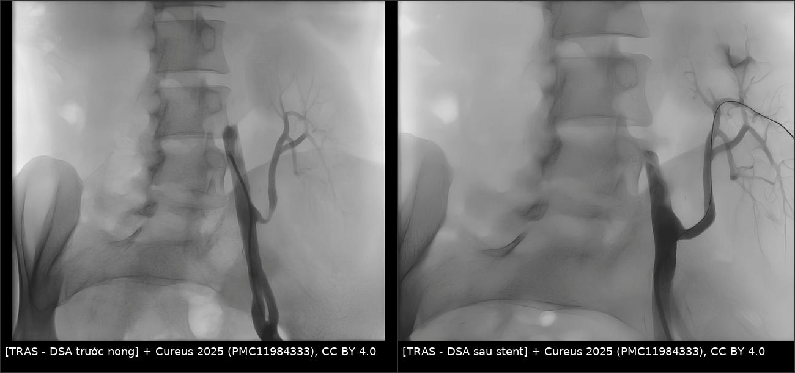
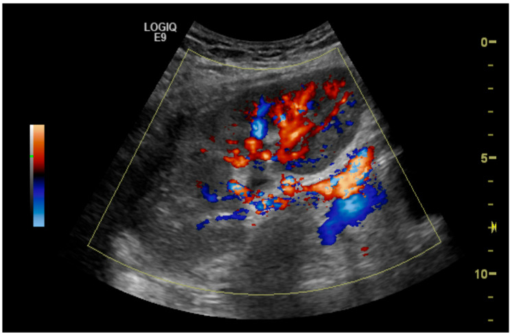

3087 — Hẹp động mạch thận ghép (TRAS): vì sao PSV cao mà RI vẫn bình thường
Tags: pattern:hep-mach pattern:tardus-parvus pattern:roi-loan-pho-doppler vung:o-bung vung:than-ghep anatomy:dong-mach-than protocol:Doppler-than-ghep protocol:CTA-mach score:PSV
Mức chắc chắn (certainty): tổng hợp y văn (literature synthesis) — ghép tổng quan biến chứng mạch–bạch mạch sau ghép thận (Abdom Radiol 2025, PMC12602614; CC BY), loạt 367 ca ghép thận có 28 ca nghi TRAS, 25 ca chụp mạch, 24 ca xác định (Diagnostics 2025, PMC12293588; CC BY) và loạt nhi 7 ca TRAS được nong bóng/stent trong 22 năm (Cureus 2025, PMC11984333; CC BY). Không có ca do nhóm tự chụp.
Câu hỏi thực hành: bệnh nhân 52 tuổi, ghép thận 4 tháng trước, đến khám vì huyết áp 168/96 mmHg dù đã dùng 3 thuốc hạ áp, creatinin từ 1,4 lên 2,3 mg/dL. Doppler thận ghép: PSV 380 cm/s tại miệng nối, RI 0,68 ở cực dưới. Bác sĩ lâm sàng hỏi: "RI 0,68 là bình thường, có cần chụp mạch không?" Bài chốt ba quyết định: (1) TRAS là biến chứng mạch hay gặp nhất sau ghép thận, hiện gặp 1–3% và thường xuất hiện trong 3–6 tháng đầu; (2) chẩn đoán dựa vào PSV tại chỗ hẹp + tỉ lệ PSV + phổ tardus parvus hạ nguồn, KHÔNG dựa vào RI — RI trung bình trong loạt TRAS xác định chỉ 0,71–0,73; (3) Doppler dương tính vẫn cần CTA/MRA rồi DSA có đo gradient (> 15 mmHg) trước khi nong bóng/stent, vì 1/25 ca Doppler dương có mạch máu bình thường.
1. Tổng quan bệnh học – cơ chế hình ảnh: vì sao hẹp 50% đã đủ gây bệnh
- Định nghĩa giải phẫu – huyết động: TRAS là giảm > 50% đường kính lòng mạch hoặc giảm > 15 mmHg áp lực qua đoạn hẹp (PMC12602614). Hai tiêu chuẩn này không tương đương: hẹp 50% đường kính đã là hẹp 75% diện tích — đúng ngưỡng bắt đầu có ý nghĩa huyết động, nên phần lớn ca "hẹp vừa" trên hình đã đủ gây tăng huyết áp.
- Dịch tễ đã đổi theo thời gian: trước đây được cho tới 23%, các đoàn hệ lớn gần đây chỉ ~1–3% ca ghép thận (PMC12602614). Ở trẻ, 6,32% trong loạt 22 năm của Serbia, và 5–15% ở trẻ tăng huyết áp sau ghép; thận hiến từ người chết 11,11% so với thận hiến sống 3,39% (PMC11984333).
- Thời điểm: phần lớn xuất hiện trong năm đầu, đa số trong 3–6 tháng đầu sau ghép (PMC12602614) — trùng đúng "cửa sổ" mà creatinin và huyết áp thường được cho là do thải ghép hoặc do thuốc ức chế miễn dịch.
- Bệnh học – vì sao hẹp hay ở miệng nối: các nguyên nhân được nêu gồm kỹ thuật mổ làm tổn thương động mạch người hiến khi lấy thận, gập/kẹp động mạch khi tạo miệng nối, chênh cỡ mạch người cho – người nhận, thải ghép mạn và nhiễm CMV (PMC12602614). Miệng nối là nơi có hai yếu tố cùng lúc: mô bị kẹp trong mổ (xơ nội mạc sau đó) và thay đổi đường kính đột ngột (rối loạn dòng chảy, tăng ứng suất thành mạch).
- TẠI SAO Doppler thấy PSV cao: theo nguyên lý liên tục, vận tốc tỉ lệ nghịch với diện tích lòng mạch; hẹp còn 50% đường kính làm diện tích còn 25%, nên vận tốc trung bình tăng ~4 lần. Vì vậy PSV > 200 cm/s (so với 60–120 cm/s bình thường) là dấu hiệu trực tiếp của hẹp có ý nghĩa.
- TẠI SAO có "tardus parvus" ở hạ nguồn: hẹp gây mất năng lượng (tỉ lệ với bình phương vận tốc) → áp lực tưới sau hẹp giảm và mất sóng biên độ cao. Phổ phía sau trở nên thoải lên, đỉnh muộn, biên độ thấp — chính là tardus (chậm) parvus (nhỏ). Đây là dấu huyết động, không phải dấu giải phẫu, nên nó xuất hiện cả khi hẹp nằm ngoài động mạch thận ghép (ví dụ hẹp động mạch chậu của người nhận).
- TẠI SAO KHÔNG dùng RI để chẩn đoán: RI = (PSV − EDV)/PSV phản ánh sức cản toàn bộ của nhu mô và áp lực nhu mô, không phản ánh riêng độ hẹp. Trong loạt 28 ca TRAS, RI trung bình 0,71 ± 0,17 (cực trên), 0,73 ± 0,19 (giữa), 0,71 ± 0,21 (cực dưới) và chỉ 15/28 (54%) có RI > 0,7 (PMC12293588) — nghĩa là gần một nửa ca TRAS có RI "bình thường".
- Con số vận hành: PSV trung bình trong loạt TRAS xác định là 462,57 ± 166,28 cm/s (PMC12293588). Lâm sàng lúc chẩn đoán thường là creatinin ~2,1 mg/dL, huyết áp tâm thu > 150 mmHg, cách ghép ~6 tháng (dẫn lại trong PMC12293588); loạt này có huyết áp tâm thu trung bình 151 mmHg và creatinin 2,43 mg/dL.
2. Mẫu hình + chẩn đoán phân biệt theo vị trí (gamut)
- Theo vị trí hẹp (đọc CTA/DSA theo đúng thứ tự này):
- Miệng nối động mạch thận – động mạch chậu ngoài: hay gặp nhất; hẹp 1–2 cm đầu, thường do xơ nội mạc hoặc kỹ thuật.
- Đoạn gần sát miệng nối (proximal donor artery): hẹp do kẹp/tổn thương lúc lấy thận.
- Thân động mạch thận ghép: gập (kinking) hoặc bị chèn ép từ ngoài bởi lymphocele, máu tụ, nang quanh thận.
- Rốn thận: hẹp nhánh, hẹp trong nhu mô.
- "Hẹp dòng vào" (inflow stenosis) — động mạch chậu của người nhận: hẹp trước miệng nối, gây giảm áp toàn bộ thận ghép; trên Doppler giống TRAS nhưng không có hẹp tại động mạch thận.
- Theo cơ chế: xơ nội mạc (intimal hyperplasia) · gập/kẹp cơ học · chèn ép bởi khối dịch quanh thận · huyết khối · loạn sản/xơ vữa mạch người hiến.
- Theo kiểu trình bày lâm sàng:
- Tăng huyết áp mới/xấu đi (thường cần ≥ 2 thuốc) — kiểu hay gặp nhất.
- Suy chức năng thận ghép (creatinin tăng, thiểu niệu) — dễ bị quy cho thải ghép.
- Pickering syndrome: tăng huyết áp kịch phát + phù phổi cấp do hẹp động mạch thận ở bệnh nhân chỉ còn một thận (chính là thận ghép) (PMC12602614).
- Phát hiện tình cờ trên Doppler định kỳ, chưa có triệu chứng.
- Ảnh giải phẫu chuẩn để đọc CTA: xem Hình 1 — số 1 là động mạch chậu trong, 2 là động mạch chậu ngoài, 3 là động mạch thận ghép chính, 4 là nhánh phân thùy, 5 là động mạch đùi chung. Đọc sai mốc 2→3 là nguyên nhân hay gọi nhầm "hẹp" ở chỗ mạch gập bình thường.

Hình 1 — CTA dựng sagittal thận ghép hố chậu phải: 1 động mạch chậu trong, 2 động mạch chậu ngoài, 3 động mạch thận ghép chính, 4 nhánh phân thùy, 5 động mạch đùi chung. Nguồn: White-Dzuro CE et al., Abdom Radiol 2025 (PMC12602614), CC BY 4.0.3. Bảng so sánh phân biệt (ma trận đối chiếu)
| Thực thể | Hình ảnh điển hình | Chốt vào (rule-in) | Chốt loại (rule-out) | Gợi ý xác nhận |
|---|---|---|---|---|
| TRAS (hẹp miệng nối) | PSV tại chỗ hẹp > 200 cm/s, tỉ lệ PSV hẹp/trước hẹp > 2:1, tardus parvus hạ nguồn; CTA: hẹp khu trú > 50% đường kính | PSV > 200 cm/s + tỉ lệ > 2:1 + phổ hạ nguồn bất thường; hoặc hẹp > 50% trên CTA/MRA | Động mạch đều, không có tardus parvus, tỉ lệ PSV < 2:1 → loại | DSA + gradient > 15 mmHg; nong bóng ± stent |
| Hẹp động mạch chậu người nhận (inflow) | Hẹp trước miệng nối trên CTA; tardus parvus lan tỏa cả thận ghép; chênh áp đoạn chậu–đùi | Hẹp ở động mạch chậu + gradient trước miệng nối | Động mạch chậu bình thường, hẹp chỉ tại miệng nối → loại | DSA đo áp hai bên miệng nối; xử lý tổn thương chậu trước |
| Thải ghép cấp (TCMR) | Thận to, phù, giảm tưới, PSV giảm, RI tăng > 0,8, không hẹp khu trú | Thận to + RI cao + không hẹp mạch + đáp ứng corticoid | Có hẹp khu trú + PSV cao → loại | Sinh thiết (Banff); Doppler theo dõi |
| Độc thận do CNI | Tưới máu giảm nhẹ, RI tăng nhẹ, không hẹp, nồng độ thuốc cao | Nồng độ CNI cao + cải thiện khi giảm liều | Hẹp khu trú rõ → loại | Nồng độ thuốc; sinh thiết nếu không rõ |
| Huyết khối tĩnh mạch thận ghép | Thận to, đau, mất phổ tĩnh mạch, đảo chiều dòng động mạch thì tâm trương; CT: khuyết thuốc tĩnh mạch | Mất phổ tĩnh mạch + thận to cấp | Tĩnh mạch thông, có phổ → loại | CTA/CTV; siêu âm có Doppler màu |
| Tắc nghẽn niệu quản | Ứ nước, RI tăng, phổ động mạch còn tốt; không hẹp mạch | Ứ nước + RI tăng + không hẹp mạch | Không ứ nước, có hẹp mạch → loại | Siêu âm, CT niệu quản; đặt stent/niệu quản |
| Giả phình/AVF sau sinh thiết | Ổ tăng tín hiệu mạch, dòng xoáy "yin-yang", PSV rất cao tại ổ; AVF có dòng tốc độ cao thì tâm trương | Ổ mạch ngoài lòng + dòng rối tại chỗ | Không ổ mạch, phổ bình thường → loại | CTA/DSA; đốt mạch |

Hình 2 — DSA một bệnh nhi TRAS: trái hẹp nặng tại miệng nối động mạch thận ghép, phải sau nong bóng + đặt stent, lòng mạch thông thoáng và các nhánh phân thùy hiện rõ. Nguồn: Spasojevic Dimitrijeva B et al., Cureus 2025 (PMC11984333), CC BY 4.0; ảnh ghép letterbox, không crop.4. Protocol chụp – ngưỡng Doppler – chỉ định can thiệp
4.1 Doppler là bước đầu, nhưng phải đo đủ ba biến
- Đầu dò 3,5–5 MHz, bệnh nhân nằm ngửa, góc Doppler ≤ 60°; khảo sát động mạch thận ghép từ miệng nối đến rốn thận, sau đó lấy phổ trung tâm nhu mô ở 3 cực (trên/giữa/dưới).
- Ba biến phải ghi trong kết luận: (1) PSV tại chỗ hẹp và trước chỗ hẹp (để tính tỉ lệ); (2) hình dạng phổ hạ nguồn (tardus parvus/turbulence/spectral broadening); (3) AT và RI ở nhu mô — RI để theo dõi, không để chẩn đoán hẹp.
- Ngưỡng được dùng (không có tiêu chuẩn thống nhất trên thế giới):
- Ngưỡng "mềm": PSV > 200 cm/s, tỉ lệ hẹp/trước hẹp > 2:1, tardus parvus/turbulence hạ nguồn (PMC12602614).
- Ngưỡng "chặt" của một cơ sở lớn: 2 trong 3 tiêu chí PSV > 300 cm/s, tỉ lệ > 3:1, tardus parvus/aliasing (PMC12602614).
- Theo nghiên cứu riêng: PSV ≥ 250 cm/s cho độ nhạy 100%, độ đặc hiệu 95% (Baxter, dẫn lại); PSV > 257,5 cm/s cho độ nhạy 78,57%, độ đặc hiệu 100% (Qi, dẫn lại); tổng hợp chung độ nhạy > 90%, độ đặc hiệu > 80%, phụ thuộc người làm (PMC12293588).
- Vì sao phải ghi rõ ngưỡng của cơ sở: cùng một PSV 260 cm/s, với ngưỡng mềm là "hẹp", với ngưỡng chặt là "chưa đủ" — nếu không ghi, kết quả không so sánh được giữa các lần.
4.2 Khi Doppler dương: CTA/MRA rồi DSA
- CTA (lát 1 mm, thì động mạch) cho giải phẫu miệng nối, nhánh, và loại trừ nguyên nhân ngoài mạch (lymphocele, máu tụ chèn ép). Hạn chế: thuốc cản quang i-ốt trên thận ghép — dùng liều tối thiểu, hydration theo quy trình.
- MRA không cản quang được xem là an toàn, đáng tin cậy và không cần gadolinium (PMC12602614) — ưu tiên ở bệnh nhân eGFR thấp, tránh nguy cơ xơ hóa da do gadolinium.
- DSA là chuẩn xác định, kèm đo gradient áp lực qua chỗ hẹp: > 15 mmHg là ngưỡng can thiệp (PMC12602614). DSA cũng là lúc quyết định nong/stent ngay.
4.3 Điều trị và kết quả
- Nong bóng (PTA) ± stent: stent dành cho tổn thương ostial/miệng nối và ca hồi phục đàn hồi (recoil) sau nong. Tỉ lệ thành công lâm sàng (cải thiện huyết áp hoặc chức năng thận) 65–94%, tái hẹp 4,2% (PMC12602614).
- Ở trẻ: 7 ca TRAS được can thiệp, 5 ca chỉ nong bóng, 2 ca cần stent, 2 ca phải can thiệp lại (tổng 7 lần nong); theo dõi trung bình 56,86 ± 45,76 tháng, không có biến chứng, huyết áp và số thuốc hạ áp giảm, eGFR cải thiện không có ý nghĩa thống kê; 1 ca tiến triển bệnh thận mạn độ IV vì nhiễm CMV nặng kèm (PMC11984333).
- Mổ tái thông dành cho ca thất bại nội mạch, tổn thương dài, hoặc hẹp kèm tổn thương động mạch chậu phức tạp.
flowchart TD
A["Ghép thận + THA mới hoặc creatinin tăng"] --> B["Doppler thận ghép: PSV, tỉ lệ PSV, phổ hạ nguồn, RI"]
B --> C{"PSV > 200 cm/s HOẶC tỉ lệ > 2:1 HOẶC tardus parvus?"}
C -->|"Không"| D["Tìm nguyên nhân khác: thải ghép, CNI, tắc niệu quản, huyết khối tĩnh mạch"]
C -->|"Có"| E["CTA 1 mm hoặc MRA không cản quang"]
E --> F{"Hẹp > 50% đường kính?"}
F -->|"Không"| D
F -->|"Có"| G["DSA + đo gradient qua chỗ hẹp"]
G --> H{"Gradient > 15 mmHg?"}
H -->|"Không"| D
H -->|"Có"| I["Nong bóng ± stent"]
I --> J["Doppler theo dõi 1-3-6-12 tháng"]
J --> K{"Tái hẹp?"}
K -->|"Có"| I
K -->|"Không"| L["Theo dõi định kỳ"]
5. Biến thể bình thường và cạm bẫy
- RI bình thường KHÔNG loại trừ TRAS: đây là cạm bẫy số một — 54% ca TRAS có RI > 0,7 nhưng nghĩa là 46% còn lại nằm dưới 0,7, và RI trung bình 0,71–0,73 (PMC12293588). Nếu chỉ nhìn RI sẽ bỏ sót gần nửa số ca.
- Doppler dương tính vẫn có thể mạch bình thường: 1/25 ca (4%) có DSA bình thường dù Doppler kết luận hẹp (PMC12293588). Vì vậy không nong theo Doppler đơn thuần — phải có hình ảnh giải phẫu + gradient.
- Gập mạch (kinking) giả hẹp: động mạch thận ghép đi từ động mạch chậu lên hố thận thường gấp khúc; đoạn gấp cho PSV cao cục bộ nhưng không có hẹp thật và không có gradient. Đọc CTA dựng đa bình diện trước khi kết luận.
- Giả phình/AVF sau sinh thiết thận: ổ mạch ngoài lòng có dòng xoáy tốc độ cao, làm PSV vùng lân cận tăng; phân biệt bằng ổ mạch + dòng rối tại chỗ, không có hẹp dạng tấm.
- Đo khi giảm thể tích: mất nước làm PSV giảm và RI thay đổi — đo lại khi bệnh nhân đủ dịch, cùng tư thế, cùng đầu dò.
- "Hẹp dòng vào" bị bỏ qua: nếu chỉ khảo sát từ miệng nối trở đi sẽ bỏ hẹp động mạch chậu người nhận — luôn đặt đầu dò lên động mạch chậu ngoài trước miệng nối.
- Trẻ em: động mạch thận ghép có thể < 3 mm, dùng đầu dò tần số cao, góc ≤ 60°, và so sánh với Doppler nền ngay sau ghép thay vì chỉ dùng ngưỡng người lớn.
6. Tự lượng giá — Blind Quiz
Ca 1 — nam 57 tuổi, ghép thận 3 tháng, creatinin tăng

- Gợi ý lâm sàng: ghép thận 3 tháng, huyết áp khó kiểm soát, creatinin tăng; Doppler màu tại miệng nối.
- Câu hỏi: Dấu hiệu chính trên ảnh? Ba chẩn đoán phân biệt? Dấu nào chốt?
Bấm để hiện đáp án (findings + chẩn đoán)
- Dấu hiệu: dòng chảy tăng tốc, hẹp lòng mạch tại miệng nối động mạch thận với động mạch chậu ngoài (aliasing tại chỗ hẹp), tương ứng hẹp 90% trong bài gốc.
- Chẩn đoán: hẹp động mạch thận ghép tại miệng nối. Cơ chế: hẹp làm diện tích lòng mạch giảm mạnh → vận tốc tăng theo nguyên lý liên tục, tạo aliasing màu tại chỗ hẹp.
- Phân biệt: gập mạch, giả phình/AVF sau sinh thiết, hẹp động mạch chậu người nhận.
- Nguồn ảnh: Mirza A et al., Diagnostics 2025 (PMC12293588), Hình 1, CC BY 4.0.
Ca 2 — nữ 31 tuổi, ghép thận hố chậu phải, suy thận tiến triển
- Gợi ý lâm sàng: ghép thận hố chậu phải, creatinin tăng dần; cần xác định mốc giải phẫu trước khi kết luận hẹp.
- Câu hỏi: Kể tên 5 mốc mạch được đánh số? Vì sao phải xác định mốc trước khi gọi "hẹp"?
Bấm để hiện đáp án (findings + chẩn đoán)
- Dấu hiệu: 1 động mạch chậu trong, 2 động mạch chậu ngoài, 3 động mạch thận ghép chính, 4 nhánh phân thùy, 5 động mạch đùi chung.
- Chẩn đoán: giải phẫu bình thường của thận ghép — bài học là đọc đúng mốc trước khi gọi hẹp; đoạn gấp giữa 2 và 3 là nơi hay bị gọi nhầm.
- Nguồn ảnh: White-Dzuro CE et al., Abdom Radiol 2025 (PMC12602614), Hình 1, CC BY 4.0.
Ca 3 — bệnh nhi TRAS, trước và sau can thiệp
- Gợi ý lâm sàng: trẻ ghép thận, tăng huyết áp sau ghép; DSA trước và sau can thiệp.
- Câu hỏi: Hai ảnh khác nhau ở đâu? Vì sao phải đo gradient trước khi nong?
Bấm để hiện đáp án (findings + chẩn đoán)
- Dấu hiệu: trái — hẹp nặng tại miệng nối; phải — stent làm lòng mạch rộng ra, các nhánh phân thùy hiện đầy đủ hơn.
- Chẩn đoán: TRAS được nong bóng + đặt stent. Gradient > 15 mmHg xác nhận hẹp có ý nghĩa huyết động; nong khi chưa có gradient là can thiệp vào tổn thương không gây bệnh.
- Nguồn ảnh: Spasojevic Dimitrijeva B et al., Cureus 2025 (PMC11984333), Hình 1 và 4, CC BY 4.0; ảnh ghép letterbox, không crop.
Bài liên quan chéo
- 1750 – U thận ghép
- 3011 – Biến chứng niệu quản sau ghép thận
- 190 – Sỏi niệu quản thận ghép, bàng quang thần kinh
- 116 – Nhiễm trùng nặng sau ghép tạng
Ảnh
3087_hep-dong-mach-than-ghep_CTA_PMC12602614.jpg— CTA sagittal giải phẫu mạch thận ghép; White-Dzuro CE et al., Abdom Radiol 2025 (PMC12602614), CC BY 4.0.3087_hep-dong-mach-than-ghep_Doppler_PMC12293588.jpg— Doppler màu hẹp 90% tại miệng nối; Mirza A et al., Diagnostics 2025 (PMC12293588), CC BY 4.0.3087_hep-dong-mach-than-ghep_DSA-truoc_PMC11984333.jpg/_DSA-sau_PMC11984333.jpg— DSA trước/sau nong bóng + stent; Spasojevic Dimitrijeva B et al., Cureus 2025 (PMC11984333), CC BY 4.0.composite_3087_truoc-sau-stent.jpg— ảnh ghép đối chiếu tạo bằngtools/make_composite.py, letterbox nền đen, không crop.- Nguồn + giấy phép từng ảnh:
images/CREDITS.md.
Không dùng để chẩn đoán độc lập khi chưa có người hướng dẫn.